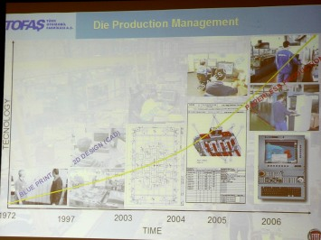
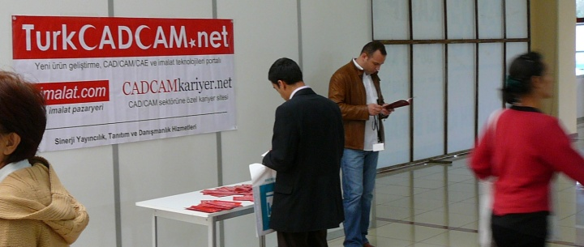
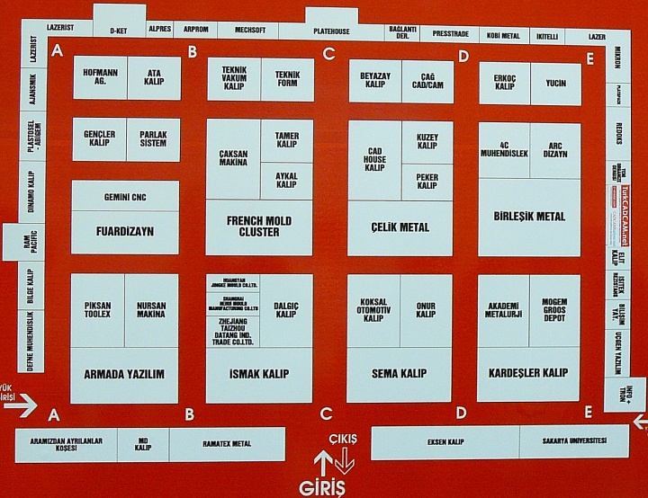

|
TOFAÞ'dan Gökhan Besler'in konuþmasýna ait bazý video ve fotoðraflar aþaðýda verilmiþtir:
(Gökhan Besler, 2004'den bu yana TurkCADCAM E-Posta Grubu üyesidir)
Aþaðýda, bu sunumdan bazý sayfalar bulunmaktadýr (Daha büyük görmek için resimlerin üzerini týklayýnýz);

3. Ýstanbul Kalýp Fuarý'ný destekleyen yayýnlar arasýnda yer alan
TurkCADCAM.net, e-imalat.com ve CADCAMkariyer.net
hakkýnda Fuar çýkýþýnda sunulan tanýtýcý broþürlere
ziyaretçiler yoðun ilgi gösterdi... |
 |

10. Hall
TurkCADCAM.net (Sinerji Yayýncýlýk) standý 10. Salon E108'de yer aldý: TurkCADCAM üyeleri standýmýzda bir araya gelme ve birebir tanýþma fýrsatý buldular...
Sol baþta: YTÜ Makine Teknolojileri Topluluðu üyelerinden Yasin Yaþar, TurkCADCAM.net standýnda gönüllü olarak görev aldý...
Saðdan sola doðru; TurkCADCAM Grubu üyelerinden Mehmet Güneþdoðdu, Ertuðrul Sayan ve Volkan Özgül standýmýzý ziyaret ederek destek verdiler...
|